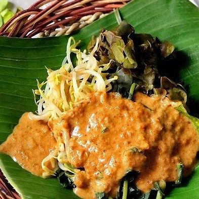
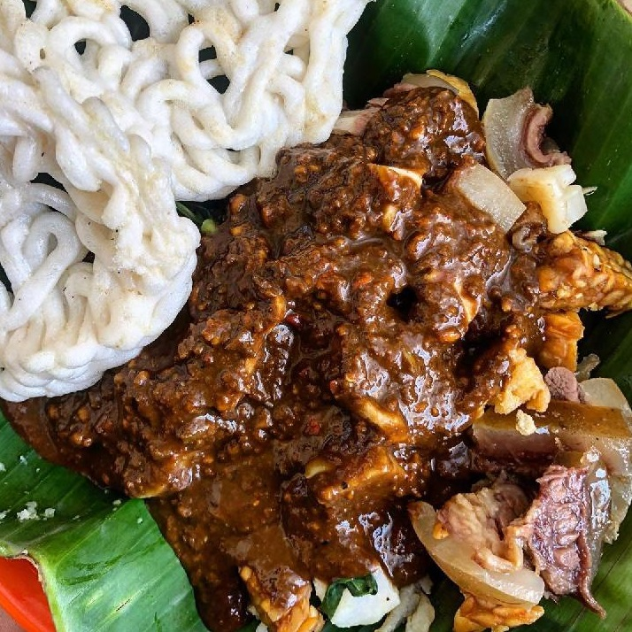

petis gurih dari olahan udang dan rempah-rempah pilihan khas Surabaya.
-

-

-
-
SUGENG RAWUH!
Pecel Semanggi, Tahu Tek, Lontong Kupang, Rujak Cingur, Rawon, Soto wonten mriki. Menu liyane wonten lan saget dipirsa ing Daftar Kuliner.